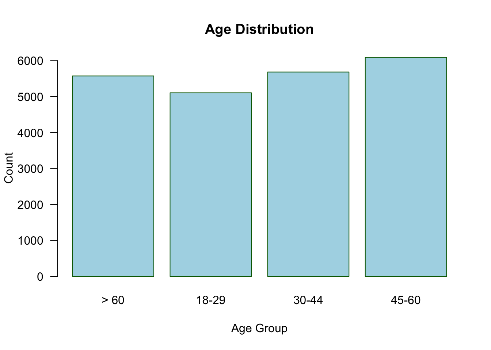

library(readxl)
nlsy_short <- read_excel(here::here("data", "cleaned_internet_midwest_data.xlsx"))Final_Project_Quarto
- Data was cleaned using Excel
- Load in proper packages
- Load in correct data using here package
- Setting the working directory
setwd("data")- Split by space and nnest
library(tidyverse)── Attaching core tidyverse packages ──────────────────────── tidyverse 2.0.0 ──
✔ dplyr 1.1.4 ✔ readr 2.1.5
✔ forcats 1.0.0 ✔ stringr 1.5.1
✔ ggplot2 3.5.2 ✔ tibble 3.3.0
✔ lubridate 1.9.4 ✔ tidyr 1.3.1
✔ purrr 1.1.0
── Conflicts ────────────────────────────────────────── tidyverse_conflicts() ──
✖ dplyr::filter() masks stats::filter()
✖ dplyr::lag() masks stats::lag()
ℹ Use the conflicted package (<http://conflicted.r-lib.org/>) to force all conflicts to become errorslibrary(gtsummary)
nlsy <- nlsy_short %>%
mutate(midwest_states = str_split(midwest_states, " ")) %>%
unnest(midwest_states)OBJECTIVE 1: Create a {gtsummary} table of descriptive statistics about your data (1 pt)
tbl_one <- tbl_summary(
nlsy,
by = midwest_identity,
include = c(location, midwest_states, gender, age, income, education),
type = list(midwest_states ~ "categorical"),
label = list(
midwest_states ~ "Midwest states picked",
gender ~ "Gender",
age ~ "Age Group",
income ~ "Household Income",
education ~ "Education Level",
location ~ "Census Region"
),
missing_text = "Missing"
) %>%
modify_spanning_header(all_stat_cols() ~ "**Identify as a Midwesterner**")
tbl_one| Characteristic |
Identify as a Midwesterner
|
|||
|---|---|---|---|---|
| A lot N = 6,8691 |
Not at all N = 9,6681 |
Not much N = 3,0341 |
Some N = 5,0861 |
|
| Census Region | ||||
| East North Central | 3,262 (52%) | 545 (6.2%) | 727 (27%) | 1,901 (41%) |
| East South Central | 134 (2.1%) | 486 (5.5%) | 103 (3.8%) | 123 (2.6%) |
| Middle Atlantic | 95 (1.5%) | 2,322 (26%) | 436 (16%) | 299 (6.4%) |
| Mountain | 313 (5.0%) | 686 (7.8%) | 333 (12%) | 378 (8.1%) |
| New England | 14 (0.2%) | 746 (8.5%) | 107 (4.0%) | 49 (1.1%) |
| Pacific | 189 (3.0%) | 1,562 (18%) | 236 (8.7%) | 263 (5.7%) |
| South Atlantic | 180 (2.9%) | 1,624 (19%) | 286 (11%) | 325 (7.0%) |
| West North Central | 1,822 (29%) | 174 (2.0%) | 283 (10%) | 981 (21%) |
| West South Central | 241 (3.9%) | 625 (7.1%) | 191 (7.1%) | 324 (7.0%) |
| Missing | 619 | 898 | 332 | 443 |
| Midwest states picked | ||||
| Arkansas | 94 (1.4%) | 260 (2.7%) | 79 (2.6%) | 109 (2.1%) |
| Colorado | 71 (1.0%) | 280 (2.9%) | 83 (2.7%) | 87 (1.7%) |
| Dakota | 556 (8.1%) | 875 (9.1%) | 263 (8.7%) | 412 (8.1%) |
| Illinois | 655 (9.5%) | 643 (6.7%) | 216 (7.1%) | 440 (8.7%) |
| Indiana | 562 (8.2%) | 644 (6.7%) | 210 (6.9%) | 409 (8.0%) |
| Iowa | 596 (8.7%) | 738 (7.6%) | 228 (7.5%) | 424 (8.3%) |
| Kansas | 375 (5.5%) | 732 (7.6%) | 205 (6.8%) | 310 (6.1%) |
| Kentucky | 141 (2.1%) | 177 (1.8%) | 62 (2.0%) | 113 (2.2%) |
| Michigan | 505 (7.4%) | 424 (4.4%) | 161 (5.3%) | 337 (6.6%) |
| Minnesota | 506 (7.4%) | 505 (5.2%) | 168 (5.5%) | 321 (6.3%) |
| Missouri | 428 (6.2%) | 596 (6.2%) | 187 (6.2%) | 311 (6.1%) |
| Montana | 57 (0.8%) | 270 (2.8%) | 69 (2.3%) | 69 (1.4%) |
| Nebraska | 370 (5.4%) | 716 (7.4%) | 201 (6.6%) | 295 (5.8%) |
| North | 275 (4.0%) | 424 (4.4%) | 131 (4.3%) | 201 (4.0%) |
| Ohio | 486 (7.1%) | 498 (5.2%) | 174 (5.7%) | 336 (6.6%) |
| Oklahoma | 187 (2.7%) | 514 (5.3%) | 130 (4.3%) | 161 (3.2%) |
| Pennsylvania | 38 (0.6%) | 27 (0.3%) | 12 (0.4%) | 43 (0.8%) |
| South | 281 (4.1%) | 451 (4.7%) | 132 (4.4%) | 211 (4.1%) |
| Virginia | 35 (0.5%) | 29 (0.3%) | 22 (0.7%) | 28 (0.6%) |
| West | 35 (0.5%) | 29 (0.3%) | 22 (0.7%) | 28 (0.6%) |
| Wisconsin | 554 (8.1%) | 534 (5.5%) | 196 (6.5%) | 365 (7.2%) |
| Wyoming | 62 (0.9%) | 302 (3.1%) | 83 (2.7%) | 76 (1.5%) |
| Gender | ||||
| Female | 3,182 (51%) | 4,784 (54%) | 1,402 (52%) | 2,316 (50%) |
| Male | 3,095 (49%) | 4,051 (46%) | 1,300 (48%) | 2,327 (50%) |
| Missing | 592 | 833 | 332 | 443 |
| Age Group | ||||
| > 60 | 1,900 (30%) | 2,085 (24%) | 635 (24%) | 955 (21%) |
| 18-29 | 1,157 (18%) | 2,196 (25%) | 624 (23%) | 1,130 (24%) |
| 30-44 | 1,482 (24%) | 2,223 (25%) | 757 (28%) | 1,222 (26%) |
| 45-60 | 1,738 (28%) | 2,331 (26%) | 686 (25%) | 1,336 (29%) |
| Missing | 592 | 833 | 332 | 443 |
| Household Income | ||||
| $0 - $24,999 | 580 (9.5%) | 860 (10.0%) | 277 (11%) | 403 (8.9%) |
| $100,000 - $149,999 | 978 (16%) | 1,320 (15%) | 261 (10.0%) | 740 (16%) |
| $150,000+ | 1,634 (27%) | 2,632 (31%) | 982 (38%) | 1,084 (24%) |
| $25,000 - $49,999 | 833 (14%) | 1,547 (18%) | 398 (15%) | 921 (20%) |
| $50,000 - $99,999 | 2,106 (34%) | 2,246 (26%) | 695 (27%) | 1,357 (30%) |
| Missing | 738 | 1,063 | 421 | 581 |
| Education Level | ||||
| Associate or bachelor degree | 2,251 (36%) | 2,918 (33%) | 858 (32%) | 1,485 (32%) |
| Graduate degree | 1,573 (25%) | 2,488 (28%) | 719 (27%) | 1,221 (27%) |
| High school degree | 363 (5.9%) | 726 (8.3%) | 220 (8.3%) | 290 (6.3%) |
| Less than high school degree | 34 (0.5%) | 116 (1.3%) | 33 (1.2%) | 59 (1.3%) |
| Some college | 1,984 (32%) | 2,500 (29%) | 829 (31%) | 1,533 (33%) |
| Missing | 664 | 920 | 375 | 498 |
| 1 n (%) | ||||
OBJECTIVE 2: Fit a regression and present well-formatted results from the regression (1 pt)
Needed to recode Male and Female as 0 and 1 (Male=0, Female=1)
nlsy <- nlsy %>%
mutate(gender_bin = ifelse(gender == "Female", 1, 0))
tbl_uvregression(
nlsy,
y = gender_bin,
include = c(
gender_bin, age, income, education
),
method = glm,
method.args = list(family = binomial()),
exponentiate = TRUE
)| Characteristic | N | OR | 95% CI | p-value |
|---|---|---|---|---|
| age | 22,457 | |||
| > 60 | — | — | ||
| 18-29 | 1.03 | 0.95, 1.11 | 0.4 | |
| 30-44 | 0.90 | 0.83, 0.96 | 0.004 | |
| 45-60 | 0.93 | 0.86, 1.00 | 0.046 | |
| income | 21,854 | |||
| $0 - $24,999 | — | — | ||
| $100,000 - $149,999 | 0.89 | 0.80, 1.00 | 0.043 | |
| $150,000+ | 0.84 | 0.76, 0.92 | <0.001 | |
| $25,000 - $49,999 | 1.07 | 0.96, 1.19 | 0.2 | |
| $50,000 - $99,999 | 0.94 | 0.86, 1.04 | 0.3 | |
| education | 22,200 | |||
| Associate or bachelor degree | — | — | ||
| Graduate degree | 0.97 | 0.91, 1.04 | 0.4 | |
| High school degree | 0.88 | 0.79, 0.98 | 0.023 | |
| Less than high school degree | 0.91 | 0.71, 1.18 | 0.5 | |
| Some college | 0.96 | 0.90, 1.02 | 0.2 | |
| Abbreviations: CI = Confidence Interval, OR = Odds Ratio | ||||
OBJECTIVE 3:Create a figure (1 pt)
barplot <- barplot(table(nlsy$age),
main = "Age Distribution",
col = "lightblue",
border = "darkgreen",
ylab = "Count",
xlab = "Age Group",
las = 1)

See what values are in the midwest_identity variable and what the most common is
unique(nlsy$midwest_identity)[1] "Not much" "A lot" "Some" "Not at all"most_common <- names(which.max(table(nlsy$midwest_identity)))mutate midwest_identity variable for numeric analysis
nlsy <- nlsy %>%
mutate(midwest_identity_num = case_when(
midwest_identity == "Not at all" ~ 0,
midwest_identity == "Not much" ~ 1,
midwest_identity == "Some" ~ 2,
midwest_identity == "A lot" ~ 3,
))mutate age variable for analysis
nlsy <- nlsy %>%
mutate(age_num = as.numeric(factor(nlsy$age,
levels = c("< 18","18-29","30-44","45-60","> 60"),
ordered = TRUE)))OBJECTIVE 4:Write and use a function that does something with the data (1 pt)
I decided to write the median midwest_identity, age, and income, dependent on which region_identity you input.summary_by_income <- function(region, data = nlsy) {
data %>%
filter(region_identity == region) %>%
summarize(mean_midwest_identity = mean(midwest_identity_num, na.rm = TRUE),
median_age = median(age_num, na.rm = TRUE),
median_income = median (income, na.rm = TRUE))
}
summary_by_income("Midwest")# A tibble: 1 × 3
mean_midwest_identity median_age median_income
<dbl> <dbl> <chr>
1 2.36 3 $150,000+ OBJECTIVE 5: Create and render a quarto document that includes at least:
The table, regression results, and figure, with appropriate captions (1 pt) This was done
Inline R code in at least 2 places, 1 pulling a statistic from a table (i.e., using gtsummary::inline_text()) and 1 printing something else (like we did with the mean age in the example) (1 pt) There were 2778 respondents to the survey, with most participants responding Not at all to the question ‘Do you consider yourself part of the Midwest?’. Among the respondents who responded Not at all, 46% were men.
Cross-references to a table and a figure at least once each (1 pt) Figure 1 contains a histogram and Table 1 a table.
A brief description of the data, including its source (1 pt)
The data used for this analysis is from github (https://github.com/fivethirtyeight/data/blob/master/region-survey/MIDWEST.csv) and it includes the the survey data collected from people from various states as to whether they themselves identify as midwestern. It includes demographic data (age, income, education, location, zip code) as well as their location (region), if they identify as midwestern, and what states they consider to be midwestern.
OBJECTIVE 6: Read in a dataset and save a file (can be data, table, figure, etc.) Use the {here} package every time you refer to file paths (at least twice) (1 pt)
- Done at the top to read in the data
- Done below to save the figure I created
png(filename = here::here("plots", "age_distribution.png"), width = 800, height = 600)
barplot(table(nlsy$age),
main = "Age Distribution",
col = "lightblue",
border = "darkgreen",
ylab = "Count",
xlab = "Age Group",
las = 1)
dev.off()quartz_off_screen
2 OBJECTIVE 7: Commit and push your work to GitHub as you go (1 pt)
This was done.
OBJECTIVE 8: In a README file, include any notes necessary for us to easily reproduce your analysis (e.g., “Run script.R and then render document.qmd”) as well as some information about your data (1 pt)
This information is in the README file.